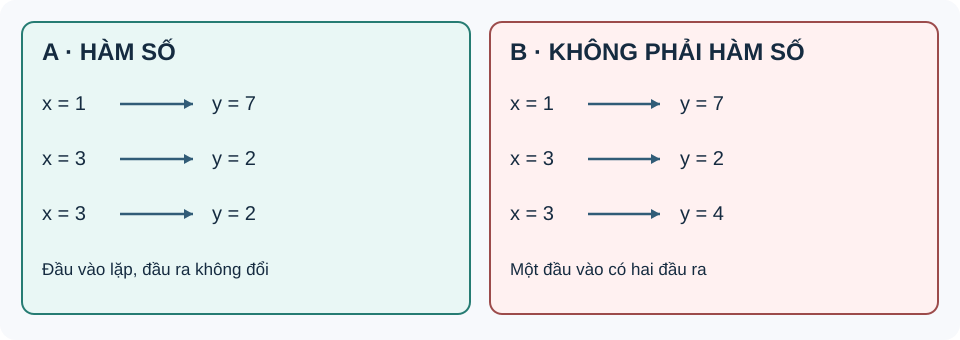

Bài 15. Hàm số
TOÁN 10 · CHƯƠNG VI · BÀI 15
Hàm số: khái niệm, tập xác định, tập giá trị, đồ thị và cách nhận biết tính đồng biến, nghịch biến.
Cùng tìm hiểu
Một máy nhận mã sản phẩm và trả ra giá bán tương ứng. Nếu cùng một mã, trong cùng điều kiện, mà máy lại cho hai giá khác nhau thì quy tắc ấy không xác định một kết quả rõ ràng. Hàm số cũng yêu cầu mỗi đầu vào thuộc miền được phép phải có đúng một đầu ra.
Muốn đọc hàm số, hãy phân biệt ba điều: những giá trị \(x\) được phép nhập, quy tắc tìm \(y\), và các điểm \((x,y)\) trên đồ thị. Một điểm vẽ được trong mặt phẳng chưa chắc thuộc đồ thị; tọa độ của nó phải thỏa đồng thời tập xác định và quy tắc.
Khi muốn biết hàm tăng hay giảm, hãy quan sát đồ thị trong cùng một khoảng từ trái sang phải. Không so hai điểm ở hai nhánh khác nhau rồi kết luận cả hàm đồng biến.
Ví dụ trực quan
Một đầu vào phải có một kết quả
Trong một ứng dụng dự báo nhiệt độ, cùng một thời điểm không thể đồng thời được gán hai nhiệt độ khác nhau trong cùng một mô hình xác định. Vì vậy ta cần nhận ra khi nào mối liên hệ có thể gọi là hàm số.
Khi đọc bảng giá trị, hãy nhớ ý nghĩa của cặp có thứ tự \((x;y)\) và phân biệt “một giá trị \(x\) xuất hiện hai dòng” với “một giá trị \(x\) có hai đầu ra khác nhau”. Em có thể học các kiến thức tiền đề ngay trong bài.
Một quy tắc là hàm số trên tập \(D\) nếu mỗi đầu vào \(x\in D\) có đúng một giá trị đầu ra \(y\). Hai dòng trùng hệt \((x;y)\) không phá điều kiện; nhưng \((x;y_1)\) và \((x;y_2)\) với \(y_1\ne y_2\) thì phá. Sau trực giác ấy mới dùng kí hiệu \(y=f(x)\).
Vì sao chọn phương pháp này? Kiểm theo từng đầu vào, không yêu cầu mỗi đầu ra phải ứng với một đầu vào duy nhất. Nếu bảng có hai đầu ra khác nhau cho một đầu vào, mối liên hệ đó không phải một hàm số theo x.
Vận dụng. Bảng A gồm \((1;7),(3;2),(3;2)\); bảng B gồm \((1;7),(3;2),(3;4)\). Bảng nào biểu diễn hàm số \(y\) theo \(x\), vì sao?
Đối chiếu
Đáp án: A là hàm số trên \(D=\{1,3\}\); B không là hàm số \(y\) theo \(x\).
Vì sao: Trong A, \(x=3\) lặp hai lần nhưng luôn cho \(y=2\). Trong B, cùng \(x=3\) cho cả \(y=2\) và \(y=4\), vi phạm tính đơn trị.
Đây là câu tự luyện công khai, không chấm điểm thành thạo. Nếu chưa đúng, mở hướng dẫn tự sửa phía dưới.
Tập xác định và tập giá trị không giống nhau
Máy tính không thể lấy căn bậc hai của số âm trong tập số thực; muốn nhập \(x\) hợp lệ, ta phải biết miền đầu vào. Nhưng các kết quả đầu ra mà máy cho được có thể là tập khác.
Với căn bậc hai trong tập số thực, biểu thức \(\sqrt t\) chỉ có nghĩa khi \(t\ge0\), và khi ấy \(\sqrt t\ge0\). Em cũng sẽ dùng kiến thức giải bất phương trình bậc nhất. Em có thể học các kiến thức tiền đề ngay trong bài.
Tập xác định \(D\) là những \(x\) được phép thay vào biểu thức; tập giá trị \(T\) gồm mọi \(y\) thực sự đạt được sau khi thay \(x\in D\). Ví dụ căn thức vừa giới hạn đầu vào, vừa làm mọi đầu ra không âm; không lấy \(D=T\) chỉ vì có cùng kí hiệu tập.
Vì sao chọn phương pháp này? Tìm điều kiện xác định trước; để tìm T phải hỏi các giá trị f(x) có thể nhận, chứ không chép lại D. Không lấy căn của giá trị âm trong \(\mathbb R\).
Vận dụng. Với \(f(x)=\sqrt{x-2}\), hãy tìm tập xác định \(D\) và tập giá trị \(T\).
Đối chiếu
Đáp án: \(D=[2;+\infty)\), còn \(T=[0;+\infty)\).
Vì sao: \(x-2\ge0\Rightarrow x\ge2\). Căn luôn không âm, bằng 0 khi x=2; với mọi y≥0, lấy x=y²+2 được f(x)=y.
Đây là câu tự luyện công khai, không chấm điểm thành thạo. Nếu chưa đúng, mở hướng dẫn tự sửa phía dưới.
Ví dụ 1. Với \(f(x)=\sqrt{x-1}\), căn thức xác định khi \(x-1\ge0\), tức \(D=[1;+\infty)\). Đồng thời \(f(x)\ge0\) và mọi giá trị không âm đều nhận được; do đó \(T=[0;+\infty)\).
Ví dụ 2. Với \(g(x)=\frac{x+1}{x-2}\), mẫu số phải khác \(0\), nên \(D=\mathbb{R}\setminus\{2\}\). Viết \(g(x)=1+\frac{3}{x-2}\), suy ra giá trị \(1\) không đạt được, còn mọi giá trị khác \(1\) đều đạt được; vậy \(T=\mathbb{R}\setminus\{1\}\).
Điểm thuộc đồ thị phải thỏa đúng quy tắc
Một điểm vẽ trên hệ trục có hai tọa độ; để biết nó có thuộc đồ thị của hàm số hay không, ta phải kiểm xem tung độ đúng bằng đầu ra ứng với hoành độ.
Ôn kí hiệu điểm \((x;y)\), trục Ox biểu diễn x, Oy biểu diễn y và thay số vào biểu thức f(x). Em có thể học các kiến thức tiền đề ngay trong bài.
Đồ thị của \(y=f(x)\) là tập tất cả điểm \((x,f(x))\) với \(x\in D\). Việc điểm nằm “gần” nét đồ thị trên hình in không đủ chứng minh: cần thử \(y=f(x)\) với đúng hoành độ của điểm.
Đối chiếu
Đáp án: Chỉ \(A(-2;3)\) thuộc đồ thị; B không thuộc.
Vì sao: \(f(-2)=(-2)^2-1=3\) khớp tung độ A; \(f(2)=3\ne5\) nên B không thuộc đồ thị.
Đây là câu tự luyện công khai, không chấm điểm thành thạo. Nếu chưa đúng, mở hướng dẫn tự sửa phía dưới.
Hàm từng đoạn cần đọc đúng ranh giới và đơn vị
Một dịch vụ gửi hàng thu phí cơ bản cho 2 km đầu và thu thêm theo mỗi km tiếp theo; cùng đầu vào vẫn phải được tính đúng một mức phí, kể cả ngay ranh giới 2 km.
Khi tính phí theo quãng đường, hãy chú ý mốc \(x\le2\) và \(x>2\), đơn vị kilomet, nghìn đồng và giá trị hàm số tại quãng đường đang xét. Em có thể học các kiến thức tiền đề ngay trong bài.
Hàm từng đoạn dùng những công thức khác nhau trên những miền không chồng mâu thuẫn. Giá trị tại x=2 phải theo nhánh chứa dấu bằng; nếu chọn nhầm, chi phí tại ranh giới và dự đoán tiếp theo đều sai.
Vì sao chọn phương pháp này? Chọn nhánh trước, sau đó thay x. Kiểm điều kiện x≥0 và đơn vị; mô hình giả định không phải biểu giá thực tế.
Vận dụng. Một dịch vụ tính \(C(x)=12\) (nghìn đồng) nếu \(0\le x\le3\), và \(C(x)=12+4(x-3)\) nếu \(x>3\). Tính \(C(3)\) và \(C(5)\) (nghìn đồng).
Đối chiếu
Đáp án: \(C(3)=12\); \(C(5)=12+4(5-3)=20\) (nghìn đồng).
Vì sao: x=3 dùng nhánh thứ nhất vì có dấu bằng. x=5 dùng nhánh thứ hai, quãng đường vượt 3 km là 2 km.
Đây là câu tự luyện công khai, không chấm điểm thành thạo. Nếu chưa đúng, mở hướng dẫn tự sửa phía dưới.
Ví dụ bổ sung B — Hàm số cho theo từng khoảng. Một dịch vụ giao hàng giả định tính phí \(C(x)\), đơn vị nghìn đồng, theo quãng đường \(x\) (km):
- \(C(1)=8\) (nghìn đồng); \(C(2)=16\); \(C(3)=22\).
- Hai công thức tương ứng với hai khoảng khác nhau, nhưng mọi quãng đường \(x\ge0\) đều có duy nhất một mức phí.
- Tập xác định thực tế \(D=[0;+\infty)\). Tại \(x=2\), dùng nhánh \(0\le x\le2\); nhánh còn lại chỉ dùng khi \(x>2\).
- Muốn vẽ đồ thị, vẽ đoạn thẳng \(y=8x\) trên \([0;2]\) và tia thẳng \(y=6x+4\) trên \((2;+\infty)\). Hai phần gặp nhau tại \((2;16)\).
Lưu ý: Mô hình tính phí này là ví dụ do dự án tự biên soạn, không sao chép biểu giá trong SGK và không đại diện cho giá giao hàng thực tế. Đây là một ví dụ về cách biểu diễn phụ thuộc bằng công thức trên từng miền.
Đồng biến phải xét trên đúng khoảng
Nếu quãng đường theo thời gian chỉ tăng, ta gọi đại lượng đồng biến; nhưng có những đại lượng trước tăng sau giảm. Vậy không thể gắn nhãn tăng/giảm cho cả hàm chỉ bằng nhìn hai điểm bất kì.
Biết so sánh hai số \(x_1<x_2\), bất đẳng thức và ý nghĩa đầu vào/đầu ra. Em có thể học các kiến thức tiền đề ngay trong bài.
Trên một khoảng \(K\), đồng biến nghĩa là \(x_1<x_2\) trong K kéo theo \(f(x_1)<f(x_2)\). Nếu \(f(x_1)>f(x_2)\) thì nghịch biến. Khái niệm phụ thuộc vào khoảng đang xét, không phải tính chất tuyệt đối của mọi hàm trên \(\mathbb R\).
Vì sao chọn phương pháp này? Chỉ so hai đầu vào cùng thuộc K. Không suy đơn điệu trên toàn miền nếu một khoảng tăng và một khoảng giảm; không cần đạo hàm ở trình độ bài này.
Vận dụng. Với \(f(x)=3x+2\) trên \([-1;2]\), nếu \(x_1<x_2\) thì \(f(x_1)\) so với \(f(x_2)\) thế nào? Hàm đồng hay nghịch biến trên khoảng này?
Đối chiếu
Đáp án: \(f(x_2)-f(x_1)=3(x_2-x_1)>0\); đồng biến trên \([-1;2]\).
Vì sao: Hệ số 3 dương nên khi x tăng thì giá trị f(x) tăng. Lập luận áp dụng mọi cặp x1<x2 trong khoảng, không chỉ một bảng nhỏ.
Đây là câu tự luyện công khai, không chấm điểm thành thạo. Nếu chưa đúng, mở hướng dẫn tự sửa phía dưới.
Thuật ngữ, kiến thức và kỹ năng
Thuật ngữ: Hàm số, tập xác định, tập giá trị, biến độc lập/phụ thuộc, đồ thị, đồng biến, nghịch biến và hàm từng đoạn.
Sau bài học, em cần làm được: Kiểm điều kiện đầu vào; xác nhận điểm thuộc đồ thị; đọc bảng/đồ thị, khoảng tăng/giảm và ranh giới hàm từng đoạn.
2.1. Khái niệm hàm số

Cách đọc hình. Đọc các mũi tên từ tập giá trị đầu vào sang tập đầu ra: mỗi đầu vào có đúng một đầu ra, dù nhiều đầu vào có thể cùng chung giá trị.
Cho tập hợp \(D\) gồm các giá trị của \(x\). Nếu mỗi \(x\in D\) xác định duy nhất một số thực \(y\), ta nói \(y\) là một hàm số của \(x\) trên \(D\). Kí hiệu \(y=f(x)\).
- \(D\): tập xác định của hàm số.
- \(f(x)\): giá trị của hàm số tại \(x\).
- \(T=\{f(x)\mid x\in D\}\): tập giá trị của hàm số.
- Một giá trị \(x\) không thể đồng thời ứng với hai giá trị \(y\) khác nhau nếu đó là đồ thị của một hàm số.
- Bảng có đầu vào lặp: nếu hai hàng cùng \(x\) và cùng \(y\), quan hệ vẫn có thể là hàm số; chỉ khi cùng \(x\) ứng với hai \(y\) khác nhau mới vi phạm tính đơn trị. Chẳng hạn \((1;3),(2;4),(2;4)\) mô tả một hàm số trên \(\{1;2\}\), nhưng thay cặp cuối bằng \((2;5)\) thì không.
2.2. Đồ thị của hàm số
Đồ thị của hàm số \(y=f(x)\) trên \(D\) là tập hợp các điểm \(M(x;f(x))\) với \(x\in D\). Hàm số có thể được cho bằng công thức, bảng giá trị, đồ thị hoặc mô tả một sự phụ thuộc duy nhất.
Cách kiểm tra một điểm: \(A(x_0;y_0)\) thuộc đồ thị khi và chỉ khi \(x_0\in D\) và \(y_0=f(x_0)\).
Ví dụ 3. Với \(y=2x+1\), điểm \(A(2;5)\) thuộc đồ thị vì \(2\cdot2+1=5\); điểm \(B(2;4)\) không thuộc đồ thị. Khi vẽ đồ thị, trục hoành biểu diễn \(x\), trục tung biểu diễn \(y\).
Chú ý khi đọc hình
Khi một đường thẳng đứng \(x=x_0\) cắt hình vẽ tại nhiều hơn một điểm, hình vẽ đó không thể là đồ thị của hàm số \(y=f(x)\) trên miền chứa \(x_0\).
Đọc hàm số qua bảng và đồ thị
Hàm số không nhất thiết phải được cho bằng một công thức duy nhất. Theo mạch kiến thức SGK Toán 10 KNTT Tập 2 (trang in 5–7), ta còn gặp bảng số liệu, đồ thị đo đạc và mô hình tính tiền theo từng khoảng.
Ví dụ bổ sung A — Bảng giá trị. Một trạm quan sát ghi nhiệt độ tại ba thời điểm:
| Thời điểm \(t\) (giờ) | 6 | 12 | 18 |
|---|---|---|---|
| Nhiệt độ \(T(t)\) (\(^\circ\mathrm C\)) | 19 | 25 | 21 |
Trong dữ liệu chỉ gồm ba thời điểm đó, tập xác định là \(D=\{6;12;18\}\); tập giá trị là \(\{19;21;25\}\). Ta đọc được \(T(12)=25\) nhưng không thể tự suy ra \(T(9)\) nếu chưa có mô hình hoặc số liệu bổ sung. Nếu hai thời điểm có cùng nhiệt độ thì giá trị đó chỉ liệt kê một lần trong tập giá trị.
2.3. Sự đồng biến, nghịch biến của hàm số
Cho hàm số \(y=f(x)\) xác định trên khoảng \(K\). Với mọi \(x_1,x_2\in K\) thỏa \(x_1<x_2\):
| Tính chất | Điều kiện | Nhìn từ trái qua phải trên đồ thị |
|---|---|---|
| Đồng biến trên \(K\) | \(f(x_1)<f(x_2)\) | Đường đi lên |
| Nghịch biến trên \(K\) | \(f(x_1)>f(x_2)\) | Đường đi xuống |
Nếu hàm số không có cùng một chiều biến thiên trên toàn miền, cần chia thành từng khoảng; không kết luận chỉ từ hai giá trị đầu/cuối.
Ví dụ 4. Hàm số \(f(x)=x^2\) nghịch biến trên \((-\infty;0)\) và đồng biến trên \((0;+\infty)\). Điều này không có nghĩa \(f\) đồng biến hoặc nghịch biến trên toàn \(\mathbb{R}\).
Ví dụ 5 (mô hình). Độ dài đường đi của xe chuyển động đều \(s(t)=12t\) (km) với \(t\ge0\) (giờ) tăng khi thời gian tăng, nên \(s\) đồng biến trên \([0;+\infty)\).
Ví dụ — Tập xác định quyết định điểm nào được phép thuộc đồ thị
Đề bài. Xét \(f(x)=\frac1{x-2}\). Tìm tập xác định và xét \(M(3,1)\), \(N(2,0)\).
Vì sao chọn cách này? Phân thức có mẫu số nên phải kiểm điều kiện trước khi thay tọa độ.
Lời giải. \(x-2\ne0\), do đó \(D=\mathbb R\setminus\{2\}\). \(f(3)=1\), nên \(M\) thuộc đồ thị. \(N\) không thuộc vì hoành độ 2 ngoài tập xác định.
Tự kiểm: Sự tồn tại của một điểm trong mặt phẳng không có nghĩa điểm đó thuộc mọi đồ thị.
Tự luyện thêm. Ba câu dưới đây là bài em tự làm sau khi xem ví dụ; chỉ mở lời giải khi đã thử xong.
- Tìm tập xác định của \(h(x)=\sqrt{5-2x}\).
- Với \(p(x)=x^2-4\), hãy kiểm tra điểm \(A(3;5)\) có thuộc đồ thị hay không.
- Hàm \(q(x)=-3x+7\) đồng biến hay nghịch biến trên \(\mathbb{R}\)? Giải thích theo định nghĩa.
Xem lời giải ba câu tự luyện
- \(5-2x\ge0\iff x\le\frac52\). Vậy \(D=(-\infty;\frac52]\).
- \(p(3)=9-4=5\), do đó \(A(3;5)\) thuộc đồ thị.
- Nếu \(x_1<x_2\) thì \(q(x_1)-q(x_2)=-3(x_1-x_2)>0\); hàm nghịch biến trên \(\mathbb{R}\).
Gợi ý khắc phục khi chưa làm được — 5 bước
- Nhận diện lỗi: Nhầm “một x xuất hiện hai lần” với “một x có hai kết quả khác nhau”.
- Tự chẩn đoán: Em có đang mắc đúng lỗi này trong lời giải bài vừa thử không? Hãy khoanh bước đầu tiên chuyển từ dữ kiện sang kết luận mà em chưa chứng minh được.
- Kiến thức gốc: Một quy tắc là hàm số trên tập \(D\) nếu mỗi đầu vào \(x\in D\) có đúng một giá trị đầu ra \(y\). Hai dòng trùng hệt \((x;y)\) không phá điều kiện; nhưng \((x;y_1)\) và \((x;y_2)\) với \(y_1\ne y_2\) thì phá. Sau trực giác ấy mới dùng kí hiệu \(y=f(x)\).
- Tự sửa: Tách các dòng theo từng x phân biệt, liệt kê mọi y gắn với x đó và thử tính đơn trị. Chỉ mở lại đáp án ở trên sau khi đã thử giải một lần không xem gợi ý.
- Luyện lại (không nhân bản câu): Em có thể luyện lại một câu có sẵn trong Core/Luyện tập, sau đó tự giải thích bằng lời của mình.
Gợi ý khắc phục khi chưa làm được — 5 bước
- Nhận diện lỗi: Đồng nhất tập x được nhập với tập y nhận được; quên điều kiện dưới dấu căn.
- Tự chẩn đoán: Em có đang mắc đúng lỗi này trong lời giải bài vừa thử không? Hãy khoanh bước đầu tiên chuyển từ dữ kiện sang kết luận mà em chưa chứng minh được.
- Kiến thức gốc: Tập xác định \(D\) là những \(x\) được phép thay vào biểu thức; tập giá trị \(T\) gồm mọi \(y\) thực sự đạt được sau khi thay \(x\in D\). Ví dụ căn thức vừa giới hạn đầu vào, vừa làm mọi đầu ra không âm; không lấy \(D=T\) chỉ vì có cùng kí hiệu tập.
- Tự sửa: Viết riêng hai câu “x nào hợp lệ?” và “giá trị căn có thể bằng bao nhiêu?” rồi thử tìm x tương ứng với một y bất kỳ. Chỉ mở lại đáp án ở trên sau khi đã thử giải một lần không xem gợi ý.
- Luyện lại (không nhân bản câu): Em có thể luyện lại một câu có sẵn trong Core/Luyện tập, sau đó tự giải thích bằng lời của mình.
Gợi ý khắc phục khi chưa làm được — 5 bước
- Nhận diện lỗi: Đọc nhầm hoành độ với tung độ, hoặc suy thuộc đồ thị chỉ bằng quan sát hình.
- Tự chẩn đoán: Em có đang mắc đúng lỗi này trong lời giải bài vừa thử không? Hãy khoanh bước đầu tiên chuyển từ dữ kiện sang kết luận mà em chưa chứng minh được.
- Kiến thức gốc: Đồ thị của \(y=f(x)\) là tập tất cả điểm \((x,f(x))\) với \(x\in D\). Việc điểm nằm “gần” nét đồ thị trên hình in không đủ chứng minh: cần thử \(y=f(x)\) với đúng hoành độ của điểm.
- Tự sửa: Thay x của từng điểm vào f, viết cặp ((x;f(x))) rồi so đúng hai tọa độ. Chỉ mở lại đáp án ở trên sau khi đã thử giải một lần không xem gợi ý.
- Luyện lại (không nhân bản câu): Quay lại phần kiến thức liên quan ngay trong bài và thử giải thích phương pháp trước khi xem lại kết quả.
Gợi ý khắc phục khi chưa làm được — 5 bước
- Nhận diện lỗi: Áp nhánh x>3 cho ngay x=3 hoặc cộng phí theo x thay vì phần vượt x−3.
- Tự chẩn đoán: Em có đang mắc đúng lỗi này trong lời giải bài vừa thử không? Hãy khoanh bước đầu tiên chuyển từ dữ kiện sang kết luận mà em chưa chứng minh được.
- Kiến thức gốc: Hàm từng đoạn dùng những công thức khác nhau trên những miền không chồng mâu thuẫn. Giá trị tại x=2 phải theo nhánh chứa dấu bằng; nếu chọn nhầm, chi phí tại ranh giới và dự đoán tiếp theo đều sai.
- Tự sửa: Đánh dấu miền của từng nhánh trên trục số, xét dấu bằng riêng, ghi đơn vị mỗi kết quả. Chỉ mở lại đáp án ở trên sau khi đã thử giải một lần không xem gợi ý.
- Luyện lại (không nhân bản câu): Em có thể luyện lại một câu có sẵn trong Core/Luyện tập, sau đó tự giải thích bằng lời của mình.
Gợi ý khắc phục khi chưa làm được — 5 bước
- Nhận diện lỗi: Đoán tăng/giảm từ một cặp điểm rồi mở rộng ra mọi x, hoặc đảo chiều khi trừ hai giá trị.
- Tự chẩn đoán: Em có đang mắc đúng lỗi này trong lời giải bài vừa thử không? Hãy khoanh bước đầu tiên chuyển từ dữ kiện sang kết luận mà em chưa chứng minh được.
- Kiến thức gốc: Trên một khoảng \(K\), đồng biến nghĩa là \(x_1<x_2\) trong K kéo theo \(f(x_1)<f(x_2)\). Nếu \(f(x_1)>f(x_2)\) thì nghịch biến. Khái niệm phụ thuộc vào khoảng đang xét, không phải tính chất tuyệt đối của mọi hàm trên \(\mathbb R\).
- Tự sửa: Viết f(x2)−f(x1), thay chính giả thiết x2−x1>0 và kết luận theo cả khoảng. Chỉ mở lại đáp án ở trên sau khi đã thử giải một lần không xem gợi ý.
- Luyện lại (không nhân bản câu): Em có thể luyện lại một câu có sẵn trong Core/Luyện tập, sau đó tự giải thích bằng lời của mình.
Học tiếp: Core và Luyện tập · Tự kiểm tra cuối chương.
Nguồn toán học: SGK Toán 10 Kết nối tri thức với cuộc sống và học liệu SLM hiện hành. Lời giảng được biên tập nhằm hỗ trợ tự học độc lập.